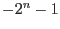
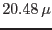

In EPIC PN data the full-second counter can show glitches. These are usually additional increments of the FTCOARSE values in PNAUX1 extension by about +1s, and also negative values of the form s (back-jumps) can occur. All other time jumps are much less likely and should make you become suspicious. For SAS_VERBOSITY of 5 (or higher) the library oal issues relevant information about time jumps in the data.
The EPIC-pn time information is stored in the PNAUX1 extension
in the FTCOARSE (unit 1s] and FTFINE (unit s)
columns. The latter unit is 512 EPIC-pn oscillator units
(nominal frequency 25MHz).
As the frames times of the EPIC-pn sub-modes are not integer multiples
of 512 oscillator clocks, there is a jitter of a fine time unit in the
time stamps
(see http://xmm2.esac.esa.int/docs/documents/CAL-TN-0081.pdf).
Time jumps are detected by dividing the time difference between two events by the nominal frame time and looking for significant deviations from integer values. To account for jitter effects some small deviations are allowed. Due to the evolution of the oscillator over the course of the mission, the optimum tolerance to apply when searching for time jumps should depend on the observation date. This has been calibrated for each observing mode, as a function of revolution number in EPN_TIMEJUMPTOL.CCF (see http://xmm2.esac.esa.int/docs/documents/CAL-SRN-0298-1-0.ps). The user may over-rule the calibrated value by setting the environment variable SAS_JUMP_TOLERANCE. The larger the value is, the larger deviations of time differences from integer multiples of the nominal frame time are still accepted. The task epframes uses the selected value, either from the CAL or from the user, and writes it to screen and to the event file in the keyword JUMP_TOL. Internally, the allowed relative time tolerance (deviation from integer number of frame times) is then the ratio of the jump tolerance and the frame time (in units s).
If SAS_JUMP_TOLERANCE is set to a too small value (`` too picky''), then the oal introduces false time jumps, i.e., reduces the length of real gaps and thus shifts event times to earlier times. If SAS_JUMP_TOLERANCE is set to a too large value (`` too relaxed''), then the oal does not recognize all real time jumps anymore.
The recommended value ranges from 3 for early (2000) observations to
about 45 for current (early 2012) observations.
This time dependence is due to temperature effects on the PN oscillator.
More details can be found in the calibration report and calibration presentations:
http://xmm2.esac.esa.int/docs/documents/CAL-TN-0081.pdf
ftp://ftp.xray.mpe.mpg.de/people/mjf/public/epic_boc_leicester_20120306.pdf
ftp://ftp.xray.mpe.mpg.de/people/mjf/public/epic_calws_esac_20130423.pdf